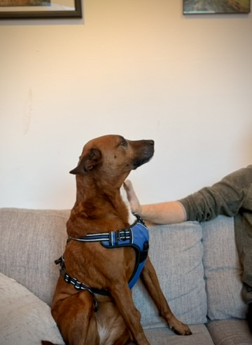

14+
Years
Helping
People
Helping
People
Meet Your Therapist
MA, LPC
Meditation Teaching, Transformational Coaching & Trauma-Informed Therapy in Boulder, CO
Background
I was raised in the delightfully southern culture of North Carolina. My father is a musician from California and my mother taught yoga and body work before becoming a full-time mom to me and my two brothers.
What followed was a long journey of learning, practice, and study — across continents and traditions — that ultimately brought me to the work I do today.
A Formative Memory
From my teenage years: My friend Ian had a job in a bookstore. For a birthday gift, he told me I could choose any book in the store. I remember slowly walking through the aisles, looking at all the different sections. I finally came to a section and paused for a long time before choosing my book: Awakening the Buddha Within, by Lama Surya Das.
Out of all the subjects in the world, the profound mystical & pragmatic teachings like these seemed the most valuable, the most worth reading & taking to heart.
I began to develop a deep, lifelong appreciation for mysticism, philosophy, existentialism, stoicism and for the Buddhist teachings. This led me to the study & practice of meditation.
Studies in India & Nepal
I spent a year and a half studying & practicing Buddhist teachings & practices in India and Nepal. Towards the end of my time in Nepal, I completed a 100-day retreat at Nagi Gompa — a monastery famous for being the home of the late Dzogchen master Tulku Urgyen Rinpoche, widely considered to be one of the greatest meditation masters to leave Tibet when the Chinese invaded and began their campaign of cultural genocide in 1959.
This monastery is on the slopes of Shiva Puri mountain, with incredible views overlooking the Kathmandu valley. It was a cold and wet winter, with lots of time to meditate amidst the bustle and warm-hearted monks, nuns & yogis.
Education & Teaching
I earned a Master's in Indo-Tibetan Buddhist Studies and have taught meditation and mindfulness in various contexts, including the college classroom and at both middle and high schools.
Later in life I returned to school to earn a Master's in Clinical Psychology, in order to better serve and help people to live inspired, vibrant lives, more aligned with their highest values.
Today I hold a non-sectarian perspective that seeks to honor the wisdom of many traditions & teachings — including that of Christianity & the West — and I hope to contribute to the integration of our human knowledge, collective peace and fundamental aliveness.
Why I Became a Therapist
Despite living in the wealthiest society in recorded history, many of us today are beset by anxiety, depression and a lack of meaning and connection.
I want to help you in your journey of healing, growth, transformation — and to deepen your connection with this big world and to live the life you are built to be living.
My Approach to Therapy
One of my goals is to give you tools, skills and perspectives that you can take with you and use for the rest of your life. I offer a variety of approaches to bring greater awareness and more skillful action.
Direct engagement with the breath to unlock the body's innate healing capacity and regulate the nervous system.
Meditative practices that are accessible to everyone — no prior experience required. Simple, grounded, transformative.
Specific ways of working directly with the nervous system to create the foundation for long-term health, happiness and well-being.
"Therapy is a very individualized process and does not look the same way for everyone. From this foundation, true change and growth is possible."
Outside the Office
When I'm not in the office, you can usually find me outside — often with a very good dog named Sailor Moon.

Roaming trails and mountains around Boulder with my dog Sailor Moon.
Skiing, dance (especially Ecstatic Dance), and time in the wilderness.

22 years of consistent meditation practice continues to ground my life.

DJing & playing guitar at events and gatherings when inspiration strikes.
Education & Continuing Study
A lifelong commitment to learning across psychotherapy, contemplative practice, and the emerging field of psychedelic medicine.
Words That Move Me
"Every morning think as you wake up: I am alive, I have a precious human life, I am not going to waste it."— The Dalai Lama
"People are somewhat gorgeous collections of chemical fires, aren't they? — We are towers of kinds of fires, down to the tiniest constituencies of ourselves, whatever those are."— Harold Brodkey
"The right way to wholeness is made up of fateful detours and wrong turnings. Until you make the unconscious, conscious, it will rule your life — and you will call it fate."— C.G. Jung
Take the First Step
Reach out today to schedule a free 20-minute consultation. I hope to hear from you.
Schedule A Free Consultation (303) 416-6116